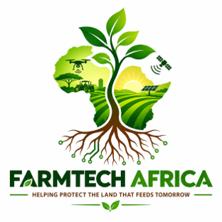

01
PURPOSE
Protect the land.
To use geospatial technology to protect agricultural land, improve farming decisions, and strengthen food security through sustainable land management.

We use GIS, remote sensing, 3D visualisation and smart sensor technology to better understand agricultural landscapes and support smarter decisions for sustainable farming.
3D VISUALISATION
SMART IRRIGATION
GIS & REMOTE SENSING
OUR SOLUTION
Our smart irrigation system brings together environmental, sensor and spatial data to support better irrigation decisions on the UP Farm.
The smart irrigation system combines multiple sources of information about the farm to determine irrigation needs.
Soil moisture data provides information about the current conditions in the soil, while weather data provides environmental conditions and forecasts. Water-level sensors monitor available water in storage tanks.
These datasets are brought together through an algorithm that analyses the conditions and supports a decision on whether irrigation is required.
Sensor, weather and spatial data
Algorithm processes the conditions
Identify irrigation requirements
Display results on the 3D farm
DATA & REMOTE SENSING
Satellite and drone imagery provide information about vegetation and crop conditions through products such as NDVI and NDRE.
Soil-moisture sensors, weather stations and water-level sensors provide real-time information about conditions on the farm.
GIS combines the different datasets with farm boundaries, infrastructure and terrain to provide spatial context for irrigation decisions.
INTERACTIVE DIGITAL TWIN
Explore our interactive Cesium web application and discover the University of Pretoria Farm through a three-dimensional digital environment.
Open Cesium Model ↗FARM AFRICA BLOG
Follow our work, discoveries and ideas around GIS, remote sensing, smart agriculture and sustainable water management.
ABOUT US
We use geospatial science, environmental data and innovative technology to understand agricultural landscapes, support better decisions and build a more sustainable future.
PURPOSE
To use geospatial technology to protect agricultural land, improve farming decisions, and strengthen food security through sustainable land management.
MISSION
We provide innovative GIS and remote sensing solutions that help farmers, conservationists, and decision-makers protect agricultural landscapes, optimise production, and conserve natural resources for future generations.
VISION
A future where every agricultural decision is informed by accurate spatial data, creating productive farms, resilient ecosystems, and lasting food security.
OUR VALUES
We are guided by innovation, collaboration, excellence, stewardship, and integrity in everything we do.
We embrace new technologies and continuously improve our methods to deliver smarter, more effective GIS solutions for agriculture and conservation.
We believe better decisions come from working together. We collaborate with farmers, governments and non-profit organisations, because data does not always tell the entire story.
We are committed to delivering accurate spatial data, high-quality analysis, and professional service that our clients can rely on.
We believe agricultural land should be cared for so future generations can continue to benefit from it.
We act with honesty, transparency, and accountability, ensuring our data, reporting, and recommendations are ethical and trustworthy.